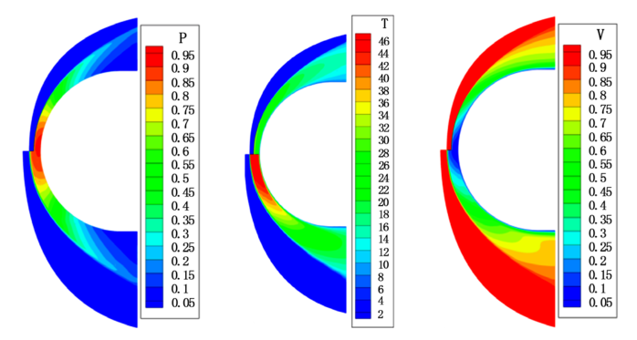
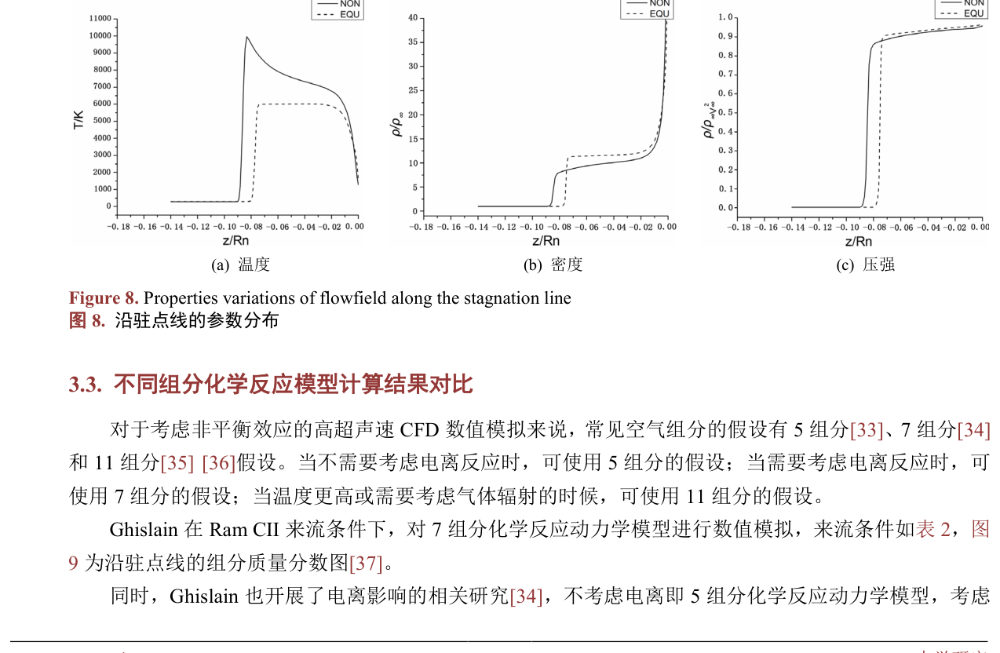
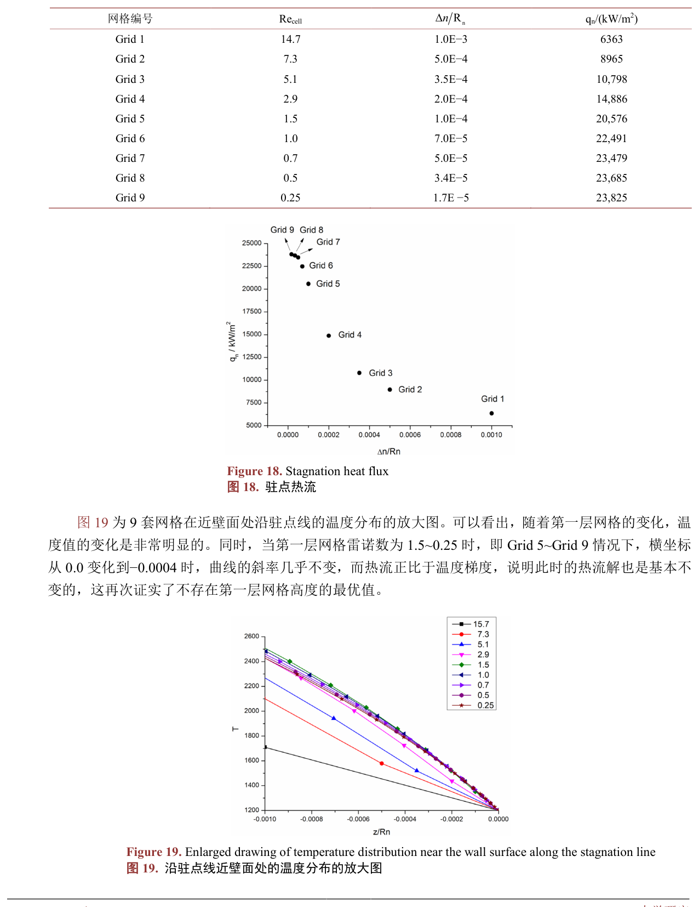
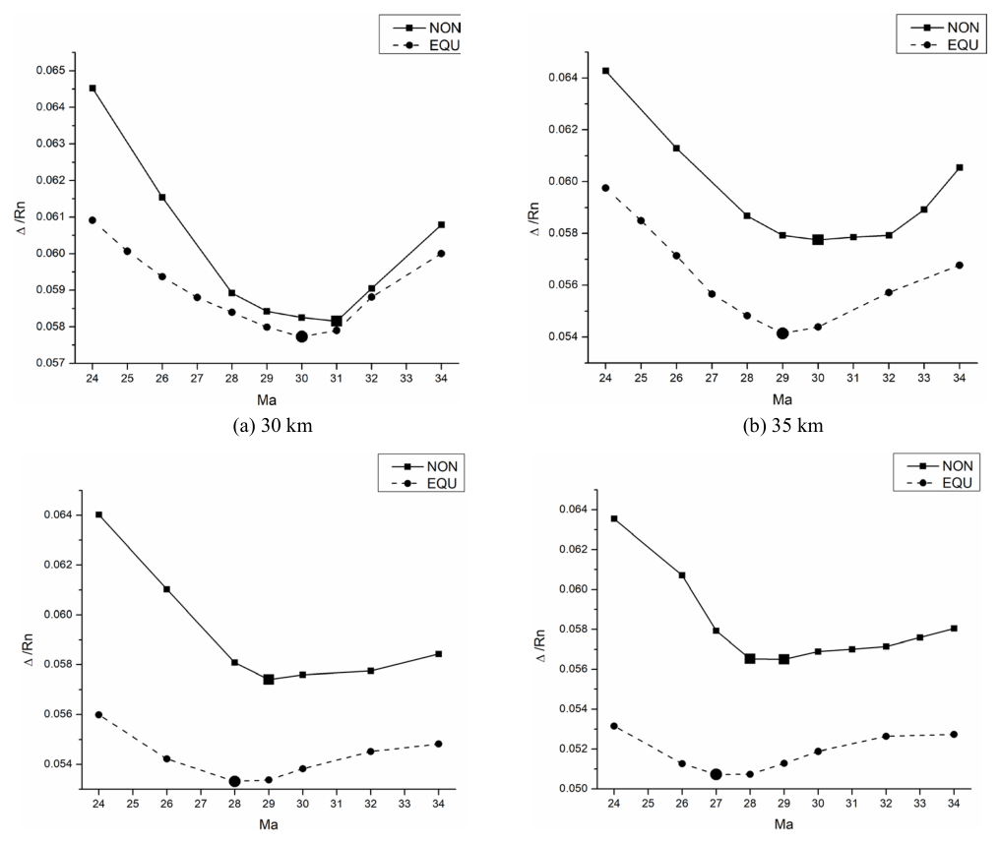

01中文摘要
本文综述高超声速气动热数值模拟中化学非平衡效应的研究进展。文章简要介绍非平衡效应与真实气体效应的物理内涵，梳理边界层方程、粘性激波层方程、抛物化方程和全Navier-Stokes方程等数值方法层次，评述化学非平衡模型、真实气体模型、化学反应模型和第一层网格间距等关键问题。作者还数值模拟化学非平衡流绕过球体的激波脱体距离，分析其随马赫数的变化规律，并指出湍流与化学非平衡耦合、辐射对气动热预测的影响值得关注。
原始摘要（英文/原文）
When the aircraft flies at hypersonic velocity, the intense compression of gas and the viscous block make the temperature rise sharply, which results in “thermal barrier” problem. The chemical non-equilibrium effect becomes one of the key issues in the research of hypersonic aerodynamics as the non-equilibrium effect in hypersonic flow has a great influence on the aerodynamic. Non-equilibrium effect and “real gas effect” are briefly introduced in this thesis. The developments chemical non-equilibrium effects in numerical simulation of aerodynamic heating were reviewed, including chemical non-equilibrium effect, “real gas effect”, chemical reaction model, the first grid spacing. The shock wave standoff distance is numerically simulated by chemical non-equilibrium flow passing a sphere and the relationship between the shock wave standoff distance with Mach number is analyzed, this law needs to be verified by subsequent tests. Finally, it is pointed out that the effect of turbulence on chemical non-equilibrium effect and the effect of radiation on numerical simulation of aerodynamic heating are worthy of attention.
02阅读说明
文章类型：综述＋作者自算数值模拟（化学非平衡圆球绕流激波脱体距离）。材料范围：期刊全文20页（刊页126–144，另封底），中英文摘要、正文5节、参考文献65条齐全。图表可读性：图3–23与表1–4均有图注进入文本层；表1反应式与速率系数为扫描文本，个别上下标可能丢失；表2列目标目疑似错位（AI推断，见open_questions）。信息完整度：综述部分完整，作者自算部分未给出控制方程、离散格式、网格总量与收敛判据。提取口径：只依据本bundle文本与图注，式(1.1)(1.2)依文本层重建，未引外部资料。 文章类型：期刊、综述
03一句话核心与三句话摘要
综述化学非平衡效应对高超声速气动热的影响，并自算给出圆球激波脱体距离随马赫数先减后增的规律。
- 高超声速激波层高温引起离解、电离与振动激发，使量热完全气体假设失效；化学非平衡模型、反应机理与近壁首层网格均显著影响气动热预测，而网格收敛性此前存在分歧。 AI概括
- 本文综述真实气体效应、化学非平衡效应、Gupta等反应模型与首层网格影响，并以5组分化学非平衡模型计算30–45 km、M=24–34圆球绕流的激波脱体距离。 AI概括
- 作者结论为：非平衡使波后温度降低、密度增大而压强速度变化小；驻点热流随首层网格高度减小而单调增加并趋于收敛；脱体距离随马赫数先减小后增大，非平衡流的最小值出现在更高马赫数，且该规律尚待M>20风洞试验验证。 原文明确
04核心内容清单
| 要点 | 类型 | 重要性 | 原文依据 | 属性 |
|---|---|---|---|---|
| 综述范围明确为真实气体效应、化学非平衡效应、化学反应模型、近壁第一层网格高度与激波脱体距离五部分。 | 研究框架 | A | 摘要；PDF第3页/刊页128 | 原文明确 |
| 空气在一个大气压下的特征温度：约800 K振动自由度激发，约2500 K O2开始离解，约4000 K O2基本离解且N2开始离解，约9000 K N2基本离解并开始电离；4000–6000 K生成少量NO并可形成NO+与e−。 | 物理化学阈值 | A | PDF第3页/刊页128；图2 | 原文明确 |
| 反应速率采用Arrhenius形式式(1.1)(1.2)；Gupta模型含11组分、20个反应，前6式可用于5组分模型，加第7式用于7组分模型，11组分需全部20式。 | 反应模型 | A | PDF第4–5页/刊页129–130；表1 | 原文明确 |
| 与量热完全气体相比，化学非平衡模型的波后高温区集中在激波后，温度迅速降低、密度增大，压强略增而速度场差别不大。 | 结果对比 | A | PDF第6–7页/刊页131–132；图4、图5 | 原文明确 |
| 与化学平衡流相比，化学非平衡流波后温度更高，向壁面流动时温度逐渐下降、密度逐渐增加；压强和速度受非平衡影响不大。 | 结果对比 | A | PDF第8页/刊页133；图7、图8 | 原文明确 |
| Lobb工况下5组分与7组分模型结果基本相同；温度仅小区域接近9000 K，电离不明显，NO+与e−质量分数比文献[34]小一个量级。 | 模型敏感性 | A | PDF第10–11页/刊页135–136；图11–14 | 原文明确 |
| 9套网格的驻点热流随第一层网格高度减小而单调增加；Grid 6–9接近理论值23,672 kW/m²，Grid 6偏差最大为5.6%（原文），据此认为不存在第一层网格高度最优值。 | 网格收敛 | A | PDF第12–13页/刊页137–138；表3、图18、图19 | 原文明确 |
| Recell为0.75–0.25（Grid 7–9）时壁面热流曲线基本重合，再次支持热流解已收敛。 | 网格收敛 | A | PDF第14页/刊页139；图20 | 原文明确 |
| 30–45 km、M=24–34范围内，化学非平衡与化学平衡的激波脱体距离均随马赫数先减小后增大，存在拐点；45 km时28与29 Ma的脱体距离大致相同。 | 参数规律 | A | PDF第15–16页/刊页140–141；图23 | 原文明确 |
| 同一高度下非平衡流最小脱体距离对应的马赫数大于平衡流；同马赫数下平衡流脱体距离更小，且随高度增加两者差值变大。 | 参数规律 | A | PDF第15–16页/刊页140–141；图23 | 原文明确 |
| 石晓峰以高超声速进气道为模型（M=9、总温4677 K、总压8545 kPa、内收缩比1.09）认为该工况平衡流与非平衡流区别不大。 | 文献结果 | B | PDF第7页/刊页132；图6 | 原文明确 |
| 作者指出湍流对化学非平衡的影响与辐射对气动热数值模拟的影响是值得关注的方向。 | 研究展望 | B | PDF第17页/刊页142 | 原文明确 |
05引言：研究问题与领域缺口
以飞行马赫数大于5定义高超声速，强激波与粘性阻滞造成“热障”，气动热预测直接关系热防护系统(TPS)设计（PDF第2页/刊页127）。作者比较飞行试验、地面试验与CFD三种途径，指出CFD可弥补前两者成本高、覆盖不全的不足。气体模型由量热完全气体、化学平衡、化学非平衡到热力学非平衡不断深化；影响气动热的因素包括壁面材料催化特性、飞行器形状（舵、翼、防热瓦缝隙）与弹道（速度、高度、姿态）。研究缺口是：化学非平衡条件下反应模型、首层网格高度与激波脱体距离的认识仍不统一。本文目标是综述这五方面并给出圆球脱体距离随马赫数的新规律。
06流动条件与几何构型
| 项目 | 数值/描述 | 依据 | 备注 |
|---|---|---|---|
| 潘沙圆柱算例：计算模型 | 二维圆柱 | PDF第6页/刊页131 | 用于化学非平衡与量热完全气体云图对比（图3） |
| 潘沙圆柱算例：来流条件 | M∞=8.78；U∞=4776 m/s；T∞=694 K；p∞=687 Pa；ρ∞=0.00326 kg/m³ | PDF第6页/刊页131 | 原文逐项给出 |
| Lobb球头算例：几何与来流 | 二维轴对称球头；球头半径6.35 mm；M∞=15.3；U∞=5280 m/s；T∞=293 K；p∞=664 Pa；Re∞=14,605 | PDF第6页/刊页131 | Re特征长度取模型头部半径 |
| Lobb球头算例：壁面条件 | 等温壁，壁温Tw=1200 K | PDF第6页/刊页131 | 原文明确 |
| 石晓峰进气道算例 | M∞=9；总温T0=4677 K；总压p0=8545 kPa；内收缩比1.09 | PDF第7页/刊页132 | 原文称该工况平衡流与非平衡流区别不大 |
| Ram CII 23.9 Ma工况（表2） | 高度61 km；R=152.4 mm；U∞=7636.4 m/s；p∞=19.85 Pa；T∞=254 K；Tw=1500 K；Re∞=19,500；Kn∞=1.2×10⁻³ | PDF第9页/刊页134；表2 | 表2首行标目为“P∞(Pa)”但数值23.9/25.9与马赫数一致，疑为M∞列错位，见open_questions |
| Ram CII 25.9 Ma工况（表2） | 高度71 km；R=152.4 mm；U∞=4658.6 m/s；p∞=4.764 Pa；T∞=216 K；Tw=1500 K；Re∞=6280；Kn∞=4.1×10⁻³ | PDF第9页/刊页134；表2 | 与23.9 Ma工况同表列出 |
| Lobb工况5/7组分对比 | 同一Lobb来流条件；Gupta 5组分与Gupta 7组分模型 | PDF第9–10页/刊页134–135 | 对比温度与组分质量分数（图11–14） |
| 9套网格驻点热流研究 | 同一来流条件（文中未给出该工况的具体参数）；Grid 1–9；Recell=14.7→0.25；Δn/Rn=1.0×10⁻³→1.7×10⁻⁵ | PDF第13页/刊页138；表3 | 该组计算的具体来流工况与球半径文中未提及 |
| 脱体距离算例：30 km | ρ∞=0.018410 kg/m³；T∞=226.5 K；μ∞=1.4753×10⁻⁵ kg/(m·s)；c=301.7 m/s | PDF第15页/刊页140；表4 | 表4列名为c，单位m/s，推测为声速（AI推断） |
| 脱体距离算例：35 km | ρ∞=0.0084634 kg/m³；T∞=236.5 K；μ∞=1.5287×10⁻⁵ kg/(m·s)；c=308.3 m/s | PDF第15页/刊页140；表4 | 同上 |
| 脱体距离算例：40 km | ρ∞=0.0039957 kg/m³；T∞=250.3 K；μ∞=1.6009×10⁻⁵ kg/(m·s)；c=317.2 m/s | PDF第15页/刊页140；表4 | 同上 |
| 脱体距离算例：45 km | ρ∞=0.0019865 kg/m³；T∞=264.2 K；μ∞=1.6712×10⁻⁵ kg/(m·s)；c=325.8 m/s | PDF第15页/刊页140；表4 | 同上 |
| 脱体距离算例：来流组成与马赫数范围 | M=24–34；O2质量分数0.21；N2质量分数0.79 | PDF第15页/刊页140 | 5组分化学非平衡模型；球半径数值文中未提及 |
07核心现象与关键参数
| 参数 | 定义 | 数值 | 关系/说明 | 依据 |
|---|---|---|---|---|
| 组分模型与反应数 | 空气组分假设；5组分用表1前6个反应，7组分加第7式，11组分用全部20式 | 5组分/7组分/11组分；对应反应数6/7/20 | 考虑电离用7组分；温度更高或需辐射时用11组分 | PDF第5页/刊页130；表1 |
| 正向/逆向反应速率常数 | Arrhenius型速率常数，A1、A2、A3为拟合常数 | 见式(1.1)(1.2)及表1的A1f/A2f/A3f、A1b/A2b/A3b | k=A1·T^A2·exp(−A3/T) | PDF第4–5页/刊页129–130；式(1.1)(1.2) |
| Recell | 壁面第一层网格雷诺数（表3列名） | Grid 1–9：14.7、7.3、5.1、2.9、1.5、1.0、0.7、0.5、0.25 | 随首层网格高度减小而减小 | PDF第13页/刊页138；表3 |
| Δn/Rn | 第一层网格高度与球头半径之比（表3列名） | 1.0×10⁻³、5.0×10⁻⁴、3.5×10⁻⁴、2.0×10⁻⁴、1.0×10⁻⁴、7.0×10⁻⁵、5.0×10⁻⁵、3.4×10⁻⁵、1.7×10⁻⁵ | 与Recell一一对应 | PDF第13页/刊页138；表3 |
| 驻点热流qw | 表3所列9套网格的驻点热流 | 6,363→23,825 kW/m²（Grid 1→Grid 9） | 随Recell减小而增加，Grid 6–9趋于收敛 | PDF第13页/刊页138；表3 |
| 驻点热流理论值 | 文献[42]给出的该来流条件下驻点热流理论值 | 23,672 kW/m² | 作为网格收敛判据；原文称Grid 6偏差最大为5.6% | PDF第12页/刊页137；表3 |
| 温度阈值 | 空气振动激发、离解与电离的特征温度（1 atm） | 约800 K、2500 K、4000 K、9000 K；NO生成4000–6000 K | 决定选用量热完全/热完全/化学非平衡/电离模型 | PDF第3页/刊页128；图2 |
| 拐点马赫数 | 激波脱体距离达到最小值对应的来流马赫数 | 45 km时28与29 Ma的脱体距离大致相同，拐点在二者之间；具体数值文中未给出 | 非平衡流的拐点马赫数大于平衡流 | PDF第15页/刊页140；图23 |
| O2/N2来流质量分数 | 脱体距离算例的空气组成 | 0.21/0.79 | 5组分模型输入 | PDF第15页/刊页140 |
| Kn∞ | 来流克努森数（表2） | 23.9 Ma工况1.2×10⁻³；25.9 Ma工况4.1×10⁻³ | 高度升高，Kn增大 | PDF第9页/刊页134；表2 |
08方法与数据
方法为文献综述加作者自算。综述覆盖真实气体效应、化学非平衡效应、5/7/11组分化学反应模型、壁面第一层网格雷诺数以及激波脱体距离五部分（PDF第3页/刊页128）。自算部分以5组分化学非平衡流模型计算圆球绕流，来流取30–45 km大气条件（表4），马赫数24–34，O2与N2质量分数分别为0.21与0.79（PDF第15页/刊页140），并与化学平衡流结果对比（图23）。网格研究采用9套网格，比较驻点热流随第一层网格雷诺数Recell的变化，并以文献[42]给出的理论驻点热流23,672 kW/m²作为基准（PDF第12页/刊页137；表3）。文中未给出控制方程、对流格式、时间推进、收敛判据与网格总量，受限于材料，无法确认。
| 项目 | 内容 | 依据 | 备注 |
|---|---|---|---|
| 研究类型 | 文献综述（真实气体效应、化学非平衡、反应模型、首层网格、脱体距离）＋作者自算圆球绕流 | 摘要；PDF第3页/刊页128 | 综述与自算结果混排，需按段落区分 |
| 数值模型 | 化学非平衡流模型；NS方程与化学反应动力学方程耦合求解（一般性描述） | PDF第4页/刊页129 | 控制方程具体形式、对流格式、时间推进、收敛判据文中未提及 |
| 化学反应机理 | Gupta 11组分20反应模型；自算脱体距离采用5组分模型 | PDF第5页/刊页130；PDF第15页/刊页140 | 表1给出A1/A2/A3拟合常数 |
| 网格研究 | 9套网格，改变第一层网格高度；Recell=14.7→0.25 | PDF第12–13页/刊页137–138 | 网格总量、增长率和远场尺寸文中未提及 |
| 热流验证 | 与文献[42]理论驻点热流23,672 kW/m²对比 | PDF第12页/刊页137 | 作者据此判断程序准确性与收敛性 |
| 模型对比方法 | 同一工况分别采用量热完全气体/化学非平衡、化学平衡/化学非平衡、5组分/7组分计算并对比云图与驻点线分布 | PDF第6–11页/刊页131–136 | 图4、7、11–14 |
| 脱体距离计算 | 5组分非平衡模型，30–45 km大气，M=24–34，与平衡流模型对比 | PDF第15–16页/刊页140–141 | 球半径、壁温、催化条件文中未提及 |
| 壁面条件 | Lobb工况为等温壁1200 K；其余算例壁面条件文中未提及 | PDF第6页/刊页131 | 壁面催化特性未说明 |
| 验证与确认 | 仅驻点热流与理论值对比；脱体距离规律无实验对比 | PDF第12页/刊页137；PDF第16页/刊页141 | 作者自认需M>20风洞试验验证 |
| 不确定度/误差分析 | 文中未提及形式化的网格无关性以外的误差分析 | 全文 | 仅给出Grid 6与理论值5.6%的偏差 |
09核心推导与公式
原文未给出从守恒律出发的完整解析推导；以下仅列出材料中可核对的定义或建模链，不补写教科书推导。
本文为综述，未给出数学推导链；仅陈述Arrhenius型正/逆向反应速率常数式(1.1)(1.2)，并以“激波脱体距离与驻点线平均密度成反比”作定性解释。下列steps为原文公式与关系陈述，不是推导步骤。
关键假设
- 化学反应速率常数可用Arrhenius形式拟合（PDF第4页/刊页129）
- 激波脱体距离与驻点线平均密度成反比（PDF第7页/刊页132，原文文字表述）
- 化学平衡流反应瞬时完成；非平衡流反应以有限速率进行（PDF第4页/刊页129）
推导过程
原文直接给出正向速率常数的Arrhenius形式，A1,fj、A2,fj、A3,fj为正向拟合常数，未推导。
逆向速率常数取同一形式，常数改为A1,bj、A2,bj、A3,bj；原文强调逆向速率取法会显著影响壁面特性、流场结构与激波形状。
原文以文字说明：高温化学反应使气体密度增加，而激波脱体距离与驻点线上的平均密度成反比，因此脱体距离受非平衡现象明显影响。原文未给公式。
适用边界：速率常数与逆向反应数据存在较大不确定性，不同机理差别明显（PDF第5页/刊页130）；“密度反比”关系为定性表述，未给出定量预测式。
10结果：主要发现与关键证据
云图与驻点线分布显示：相对量热完全气体，化学非平衡模型的高温区集中在激波后，波后温度迅速降低、密度增大，压强略增而速度差别不大（图4、图5，PDF第6–7页/刊页131–132）；相对化学平衡流，非平衡流波后温度更高，向壁面流动时温度下降、密度增加，压强与速度差别不大（图7、图8，PDF第8页/刊页133）。Lobb工况下5组分与7组分模型结果基本相同，因仅小区域温度接近9000 K，NO+与e−质量分数比文献[34]小一个量级（图11–14，PDF第10–11页/刊页135–136）。9套网格的驻点热流由Grid 1的6,363 kW/m²升至Grid 9的23,825 kW/m²，Grid 6–9趋于收敛并与理论值接近（表3、图18–20，PDF第12–14页/刊页137–139）。脱体距离在30–45 km均随马赫数先减小后增大，45 km时28与29 Ma的结果大致相同（图23，PDF第16页/刊页141）。
| 发现 | 证据 | 证据类型 | 强度 | 位置 | 属性 |
|---|---|---|---|---|---|
| 化学非平衡使激波后高温区集中于波后窄区，波后温度迅速下降、密度增大；压强略增、速度场变化不大。 | 图4云图与图5沿驻点线温度/密度/压强分布；潘沙M=8.78圆柱与Lobb球头两算例趋势相似 | 数值云图与剖面 | 强 | PDF第6–7页/刊页131–132；图4、图5 | 原文明确 |
| 化学非平衡流波后温度高于化学平衡流，且向壁面流动时温度下降、密度增加；压强和速度对非平衡不敏感。 | 图7云图、图8沿驻点线分布；同一Lobb工况两模型对比 | 数值对比 | 强 | PDF第8页/刊页133；图7、图8 | 原文明确 |
| Lobb工况下电离很弱，5组分与7组分模型结果基本相同，NO+与e−质量分数比文献[34]小一个量级。 | 图11温度对比、图12–14组分质量分数；仅小区域温度接近9000 K | 模型敏感性与组分分布 | 强 | PDF第10–11页/刊页135–136；图11–14 | 原文明确 |
| 驻点热流随第一层网格高度减小而单调增加，Grid 6–9趋于收敛并与理论值23,672 kW/m²接近，因而不存在第一层网格高度的最优值。 | 表3九套网格热流6,363–23,825 kW/m²；Grid 6–9与理论值接近；图19近壁温度梯度在Grid 5–9基本不变；图20壁面热流曲线Grid 7–9重合 | 网格收敛研究 | 强 | PDF第12–14页/刊页137–139；表3、图18–20 | 原文明确 |
| 化学非平衡与化学平衡的激波脱体距离均随马赫数增加先减小后增大，存在拐点；45 km时28与29 Ma结果大致相同。 | 图23四个高度(30/35/40/45 km)的脱体距离-马赫数曲线，最小点用大图标标记 | 数值参数研究 | 强 | PDF第15–16页/刊页140–141；图23 | 原文明确 |
| 同高度下非平衡流的最小脱体距离对应更高马赫数；同马赫数下平衡流脱体距离更小，且两者差值随高度增加。 | 图23四子图对比；作者以有限速率反应与碰撞频率随高度下降解释 | 数值参数研究 | 强 | PDF第15–16页/刊页140–141；图23 | 原文明确 |
| 高超声速进气道M=9工况下，化学平衡与非平衡计算结果差别不大。 | 石晓峰进气道算例，内收缩比1.09，总温4677 K、总压8545 kPa | 文献算例 | 中 | PDF第7页/刊页132；图6 | 原文明确 |
| 当前气动热数值模拟主要限于层流钝体绕流，未考虑湍流对化学非平衡的影响，且9000 K高温下需考虑辐射。 | 结束语中的研究展望 | 作者判断 | 中 | PDF第17页/刊页142 | 原文明确 |
11机制解释与论证链
【原文明确】高超声速激波层内振动能激发与O2/N2离解均为吸热过程，使内能转化为化学能，波后温度迅速降低、密度增大；密度增大又使激波层变薄，因脱体距离与驻点线平均密度成反比（PDF第7页/刊页132）。【原文明确】化学平衡流中反应瞬时完成，波后密度大于非平衡流，故同马赫数下平衡流脱体距离更小；非平衡流因反应以有限速率进行，气流需经过一段距离才达到平衡，较高马赫数下才能达到脱体距离极限，故其最小脱体距离对应的马赫数更大（PDF第15页/刊页140）。【原文明确】高度增加使密度降低、碰撞频率减少、达到平衡所需时间增加，非平衡效应更明显，故平衡与非平衡脱体距离差值随高度增大（PDF第15页/刊页140）。【AI概括】作者把压强变化归因于“力学过程”，故非平衡对压强与速度场影响小；这一区分是定性的，文中未给出分量分析。
12讨论：结论、贡献与局限
机理解释为：激波层内振动激发与O2/N2离解吸热，使内能转化为化学能，波后温度下降、密度上升；而激波脱体距离与驻点线平均密度成反比，故密度升高使脱体距离减小（PDF第7页/刊页132）。化学平衡流反应瞬时完成，波后密度更大，因此同马赫数下平衡流脱体距离小于非平衡流；高度升高使分子碰撞频率下降、达到平衡所需时间增加，非平衡效应增强，两种模型差值随高度增大（PDF第15页/刊页140）。关于网格，作者以9套网格与理论热流对比，否定“存在第一层网格高度最优值”的观点，认为该观点可能源于计算未收敛（PDF第13–14页/刊页138–139）。局限是作者只考虑层流钝体绕流，未考虑湍流对化学非平衡的影响，也未考虑9000 K高温下的辐射效应（PDF第17页/刊页142）。
作者结论
作者给出六点结论：1）考虑真实气体效应后激波层温度降低、密度增大，速度与压强和量热完全气体差别不大；2）化学非平衡激波后温度高于化学平衡流，向壁面温度下降、密度增加，压强与速度差别不大；3）反应模型应按实际问题选取以避免浪费计算时间；4）第一层网格高度对壁面热流影响巨大，条件允许时应尽量取小；5）平衡与非平衡的脱体距离均随马赫数先减小后增大并存在拐点，该现象待试验验证；6）非平衡最小脱体距离对应马赫数大于平衡流，说明非平衡条件下气体可压缩性增加（PDF第16–17页/刊页141–142）。
主要贡献
- 把真实气体效应、化学非平衡、反应模型、首层网格与激波脱体距离纳入同一综述框架，便于工程选用。
- 用9套网格与理论驻点热流对比，给出“热流随首层网格高度减小而收敛、不存在最优高度”的直接证据。
- 以30–45 km、M=24–34的5组分计算给出脱体距离随马赫数先减后增、且非平衡拐点马赫数更高的规律。
- 指出湍流—化学非平衡耦合与高温辐射是后续研究方向。
局限与未解决问题
作者承认：现有模拟主要针对层流钝体，未考虑湍流对化学非平衡的影响；流场温度可达9000 K，辐射效应未计入；脱体距离新规律缺乏M>20风洞试验验证（PDF第16–17页/刊页141–142）。AI识别的局限：1）综述与自算混排，自算部分未给控制方程、格式、网格量与收敛判据，无法复现；2）表2列目标目错位，Ram CII工况的来流参数需回原文核对；3）原文称Grid 6与理论值相差5.6%，按表3数据复算约为5.0%（(23,672−22,491)/23,672），二者不一致；4）图23纵坐标归一化方式与球半径未在文中说明；5）化学反应机理与壁面催化条件对热流的影响未做敏感性分析。
13对高速流动与工程的意义
【原文明确】气动热准确预测关系TPS设计，第一层网格高度的结论可直接用于热流CFD的网格准则；激波脱体距离是CFD验证的常用参数，其随马赫数非单调的规律对近空间高超声速飞行器总体设计有潜在影响（PDF第14–16页/刊页139–141）。【AI推断】对进气道/隔离器而言，本文只给出一个M=9算例且结论为平衡与非平衡差别不大，不能外推到强激波、低密度或高焓工况；其“相对量热完全气体，非平衡使波后密度增大、脱体距离减小”的机理可用于解释高焓激波串位置偏移，但需结合具体来流与壁面条件重新计算。
14核心图件




15可引用原文素材
| 原文短句 | 可支持的观点 | 位置 | 使用建议 |
|---|---|---|---|
| “激波脱体距离与驻点线上的平均密度成反比” | 密度升高导致脱体距离减小的机理 | PDF第7页/刊页132 | 引用机制解释时使用，注意原文为定性表述 |
| “该规律有待相关风洞试验的验证” | 脱体距离新规律尚缺实验确认 | PDF第2页/刊页127（中文摘要） | 说明结论的证据等级 |
| “不存在第一层网格高度的最优值” | 网格收敛结论 | PDF第13页/刊页138 | 网格准则讨论 |
| “平衡流激波后的密度大于非平衡流的” | 平衡流脱体距离更小的原因 | PDF第15页/刊页140 | 平衡/非平衡对比 |
| “随着马赫数的增加先减小后增大” | 脱体距离非单调规律 | PDF第15页/刊页140 | 参数规律引用 |
| “当温度达到大约9000 K 左右时，N2 基本完全离解” | 电离阈值与7/11组分模型选用依据 | PDF第3页/刊页128 | 反应模型选择 |
| “目前的风洞试验无法模拟如此高马赫数的来流条件” | 实验验证的困难 | PDF第16页/刊页141 | 讨论验证局限 |
16最终核验
| 核验项 | 结论 |
|---|---|
| 仅基于全文 | 是。仅使用bundle内的带页码全文、图注与表格文本；未检索外部文献，未补写教科书推导。 |
| A 级要点有依据 | 是。A级要点均给出页码/图表/公式位置：温度阈值（p128/图2）、Gupta模型（p130/表1）、云图对比（p131–133/图4、7）、网格热流（p138/表3）、脱体距离（p140–141/图23）。 |
| 属性标注 | 是。three_sentence、core_points、findings均逐条标注原文明确/AI概括/AI推断；mechanism段落内亦分段标注。 |
| 覆盖范围 | 覆盖摘要、引言、5节正文、结论与部分参考文献；综述与自算部分均已读。表1扫描文本仅按可读数值引用，未逐项复算。 |
| 无编造 | 未编造页码、图号、公式或数据。表2列目错位、5.6%偏差复算不一致、图23纵坐标未说明等均如实列为疑点；无法确认处写“文中未提及/受限于材料，无法确认”。 |
需回原文确认
- 表2首行标目为P∞(Pa)但数值23.9/25.9与马赫数相同，是否为M∞列错位？p∞=19.85/4.764 Pa对应哪一高度？
- 原文称Grid 6驻点热流与理论值相差5.6%，按表3数据复算约5.0%，该百分比如何得到？
- 图23纵坐标是否为Δ/R（脱体距离/球半径）？球半径取何值？文中未提及。
- 9套网格研究对应的来流工况、壁温与催化条件是什么？文中未给出。
- 5组分模型具体包含表1中哪6个反应？与Gupta原始机理是否完全一致？
- 图20中θ=0与θ=90°的坐标定义及壁面热流峰值位置文中未说明。
- 作者自算的脱体距离结果是否与Lobb实验或其他实验做过定量对比？文中仅称为待验证规律。
17关联文献
依据标签、板块、构型与作者脉络自动关联，可据此追踪同一问题的前序与后续工作。
18引用格式
选择期刊风格后复制；出处保留原刊名。BibTeX 可直接用于 LaTeX。
引用格式
赵一朴 2018 Developments of Chemical Non-Equilibrium Effects in Numerical Simulation of Aerodynamic Heating in Hypersonic Flow. International Journal of Mechanics Research 07 (04), 126–144. https://doi.org/10.12677/IJM.2018.74015
PDF上传 PDF 并更新本页
本页缺少全文、摘要或图件时，可在浏览器本地补入 PDF。解析完全在本机完成，不上传网络；完成后会更新本页的 PDF 打开链接、原摘要、IMRaD 机器抽取、关键句与含图页面。复杂的公式语义与中文深度解读仍以原文和既有精读记录为准。
Zotero 笔记摘录
高超声速飞行器：马赫数大于5的飞行器。 数值模拟经历了：边界层方程（BL）、粘性激波层方程（VSL）、抛物化方程（PNS）和全NS方程的求解过程。 气体状态方程经历了：量热完全气体模型、化学平衡流模型、化学非平衡流模型、热力学非平衡流模型。 真实气体效应：高温气体内在属性变化——高超声速飞行在激波层内产生的高温，能够引起气体分子的离解反应、电离反应、电子激发、光辐射等一系列现象，高温也改变了流场中气体分子不同能量模式间的能量传递方式和速率。 空气在一个大气压下发生振动激励、离解和点解的温度范围： 当温度大于800K时，因为气体分子的振动能被激发，比热和比热容会成为温度的函数，此时是完全气体状态。随着温度进一步升高，流动成为化学反应流，此时的化学发暗影需要以有限速率按照一定的松弛时间达到相应的平衡态。 平衡流是指从非平衡态向平衡态过渡过程中的化学反应时间和能力模式的振动松弛时间与流体质点流过流场的特征时间相比很小的流动，此时气体的比热是温度和压强的函数；非平衡流是指振动松弛时间和化学反应时间与流体质点流过流场的特征时间是可比拟的流动状态，处于同一量级，此时的NS方程需要与化学反应动力学方程进行耦合求解，各组分之间以有限速率进行着化学反应，需要同时考虑扩散及组分生成项对组分守恒方程的影响。 非平衡效应对飞行器的影响：（1）飞行器附近的温度和气体性质会被改变，影响气动热。（2）激波位置、形状和边界层分离区大小会被改变，影响气动力。（3）电离产生的电子会在飞行器周围形成等离子层和电子吸收无线电波，导致飞行器通讯中断。 非平衡流动的首要任务是确定化学反应速率常数，一般用Arrhenius公式计算速率。 非平衡效应相比于平衡态主要影响气动热，也即影响温度、密度，而对压强、速度影响不大。非平衡效应会使得激波后的温度高于平衡流，但因为会发生离解反应（吸热），因此温度又会快速下降。 对于考虑非平衡效应的高超声速模拟，一般会用5组分、7组分和11组分假设。当不考虑电离时，可使用5组分假设；当需要考虑电离时可使用7组分假设；当温度更高或需要考虑气体辐射时，可使用11组分假设。如下图，前6个反…